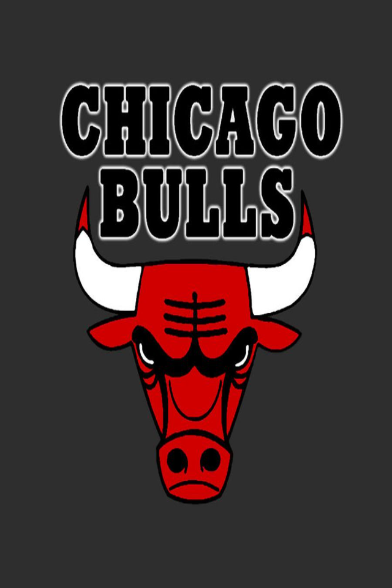

Chicagos Bulls
|  |
O Chicago Bulls é uma franquia de basquete da NBA com sede em Chicago, Illinois. Fundada em 1966, a equipe rapidamente se tornou uma das mais icônicas e bem-sucedidas da liga. Os Bulls são mais conhecidos por sua era de domínio na década de 1990, liderada por Michael Jordan, quando conquistaram seis títulos da NBA em oito anos. Este período, sob a direção do treinador Phil Jackson, é amplamente considerado uma das eras mais marcantes na história do basquete. Além de Michael Jordan, os Bulls contaram com jogadores lendários como Scottie Pippen, Dennis Rodman e outros durante sua era de sucesso. A equipe é conhecida por seu estilo de jogo agressivo e sua forte defesa, que contribuiu para sua reputação vitoriosa. O United Center em Chicago é a casa dos Bulls e é um dos locais mais icônicos da NBA. Embora a era de ouro dos Bulls tenha sido nos anos 90, a equipe continua a ser uma parte fundamental da história da NBA e é seguida por uma base de fãs apaixonada. Embora não tenham conquistado um título da NBA desde 1998, os Bulls permanecem uma equipe respeitada e competitiva na liga, com uma rica herança e legado. |